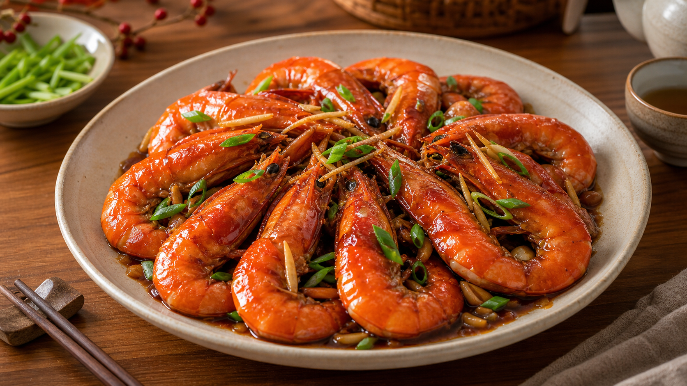
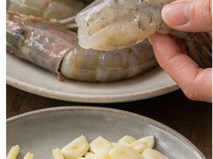
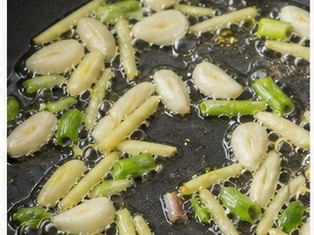
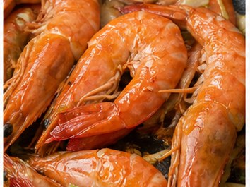
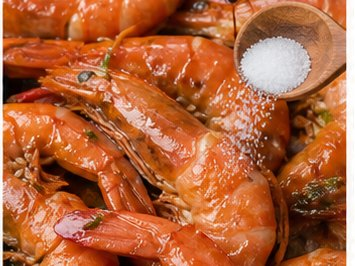
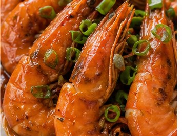

Reunion Dinner Recipe
Braised Prawns
Laughter, joy and celebration

About This Dish
For Chinese families from coastal, Southern or Eastern regions, prawns can bring a sense of celebration to the table. Their bright red colour also makes them suitable for festive meals and joyful gatherings.
Ingredients
- Large prawns (500 g)
- Garlic (3 cloves, sliced)
- Ginger (5 slices)
- Spring onion (2, cut into sections)
- Soy sauce
- Cooking wine
- Sugar
- Oil
- Optional chilli
Method
-

Rinse and pat the prawns dry. Trim the whiskers and legs if needed. -

Heat the oil in a wok or frying pan. Add ginger, garlic and spring onions, then fry for about 1 minute until fragrant. -

Add the prawns and stir-fry over high heat for 3-4 minutes, until they turn bright red. -

Add cooking wine (1 tbsp), light soy sauce (2 tbsp), sugar, salt and white pepper (1/4 tsp). Stir-fry for another 2-3 minutes until the prawns are evenly coated and glossy. -

Transfer to a plate and serve hot. The bright red colour of the prawns symbolises joy, celebration and good fortune at the reunion table.
Allergens
- Crustaceans
- Soy
- May contain gluten depending on soy sauce brand
Please check product labels carefully, especially for sauces and prepared ingredients.